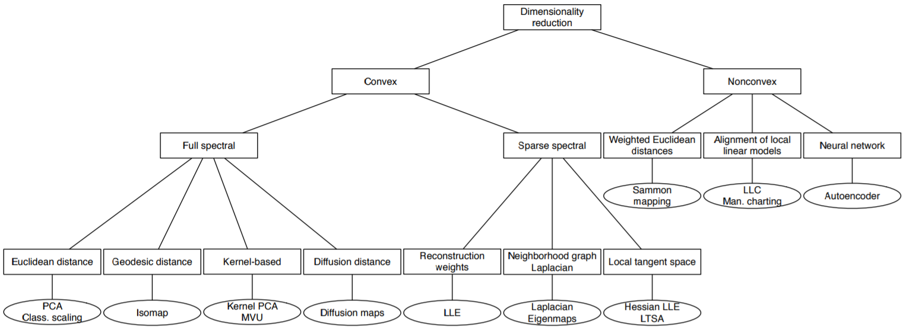
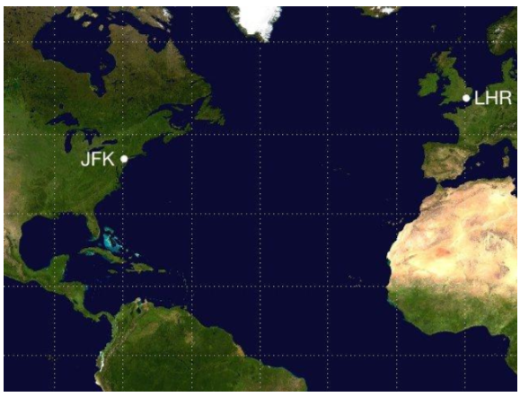

Dimensionality reduction
Manifold learning
This article will focus on dimensionality reduction. But before that, we should learn some conceptions about manifold learning. What is the manifold? A manifold is descirbed on wiki as a topological space that locally resembles Euclidean space near each point. More precisely, each point of an n-dimensional manifold has a neighbourhood that is homeomorphic to the Euclidean space of dimension n. This is a really unintelligible defination. We can understand better from an example.

The earth can be regarded as a sphere, a two-dimensional manifold, and at one point in the earth, the surrounding area can be regarded as a plane which can be seen as a Euclidean space.
There are three types of machine learning problems based on the manifold hypothesis. we defind :
- Cluster:
- Classification / regression:
or
- Dimensionality reduction:
Dimensionality Reduction
The problem of (nonlinear) dimensionality reduction can be defined as follows. Assume we have a dataset represented in a n × D matrix X consisting of n datavectors with dimensionality D. Assume further that this dataset has intrinsic dimensionality d (where d < D, and often
Dimensionality reduction techniques transform dataset X with dimensionality D into a new dataset Y with dimensionality d, while retaining the geometry of the data as much as possible. In general, neither the geometry of the data manifold, nor the intrinsic dimensionality d of the dataset X are known.
As below picture shows, We can subdivide techniques for dimensionality reduction into convex and non-convex techniques. Convex techniques optimize an objective function that does not contain any local optima, whereas non convex techniques optimize objective functions that do contain local optima.

Convex techniques for Dimensionality Reduction
Convex techniques for dimensionality reduction optimize an objective function that does not contain any local optima, i.e., the solution space is convex. We subdivide convex dimensionality reduction techniques into techniques that perform an eigendecomposition of a full matrix and those that perform an eigendecomposition
of a sparse matrix.
Firstly, we talk about Full spectral techniques for dimensionality reduction. Full spectral techniques for dimensionality reduction perform an eigendecomposition of a full matrix that captures the covariances between dimensions or the pairwise similarities between datapoints. In this subsection, I will discuss four popular techniques 1)PCA, 2)Kernel PCA, 3)Isomap, 4) Maximum Variance Unfolding.
PCA
Principal Components Analysis (PCA) is by far the most popular linear techniquea for dimensionality reduction. It performs dimensionality reduction by embedding the data into a linear subspace of lower dimensionality. PCA constructs a low-dimensional representation of the data that describes as much of the variance in the data as possible. This is done by finding a linear basis of reduced dimensionality for the data, in which the amount of variance in the data is maximal. Now let’s derive the PCA.
Given a set of data, , Centralization is expressed as
, where
.
The centralized data scatter distribution in the direction of U1, which means that absolute value reach maximum when projected in the U1 direction(can also be said that the maximum variance). Calculation method of projection is inner product between x and u1, and maxmize this function: , it’s also equal to these functions:
, where
So the equation to be maxmized become . We want to find the maximum value of this formula. We first have to prove whether there is a maximum value. Suppose that one of the eigenvalues of XX’ is
, the corresponding eigenvector is
, then:
The proof is finished. For two order form of a semi positive definite matrix, there is a maximum value. Now the problem is how to find the maximum value of the objective function.We can solve the maximum value by constructing the Lagrange function.
According to result, we can know that the maximum value is taken, the maximum value of the target is obtained. Then we can deduce the FCA algorithm.
- The matrix X for original data is composed of m rows and n columns
- Zero mean of each line of X (representing an attribute field)
- Find the covariance matrix
- Find the eigenvalues and corresponding eigenvectors of the covariance matrix
- The eigenvectors are arranged in line from the upper to the lower according to the corresponding eigenvalue, and the front K rows are taken to a matrix P
- Y=PX is the data after reducing the dimension to the K dimension
Isomap
PCA can’t handle the nonliner manifold, while Isomap keep the distance on geodesic line of the manifold in the mapping process. what is geodesic line? let’s look the below figures:

We want to compute the distance between two places. In the Cartesian coordinate system, we usually compute the linear distance between two points. However, the earth is a sphere, the real distance is a curve along the surface of the earth. That is the geodesic line. Sometimes, the distance of the geodesic line is very different from the linear distance. Just as these picture:
Isomap compute approximative geodesic line by constructing adjacency graph. The graph theory frame is introduced, the data is used as the point in the graph, the point is connected by the edge between its adjacent points, and the approximate geodesic line is replaced by the shortest path, (Dijkstra or Floyd algorithm can be used), When the data points tend to be infinite, this estimate tends to the real geodesic distance.
- Build the adjacency graph G. Based on the computed Euclidean distance
between adjacent points on manifold input space X, select the nearest K points from each sample point(K-Isomap) or select points in a circle with a radius of
at the sample point. Then connect the adjacent point with edges, a weighted flow chart G is constructed, which reflects the adjacent relation
- Calculate the shortest path between all point pairs. By calculating the shortest path between any two points on the adjacency graph G, we approximate the geodesic distance matrix
on the manifold, and the shortest path algorithm is mainly Floyd or Dijkstra algorithm.
- Build a K dimensional coordinate vector. According to the graph distance matrix